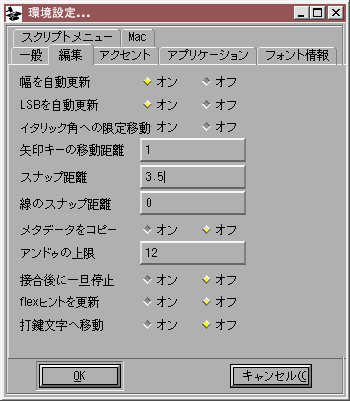
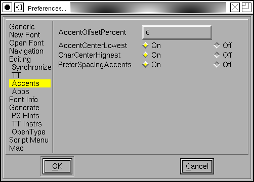
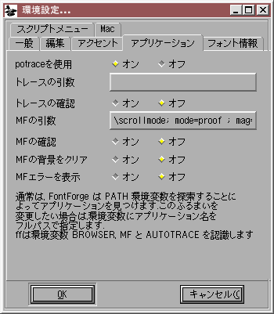
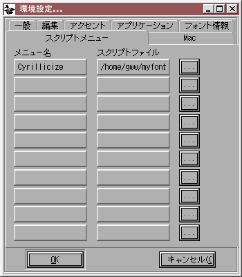
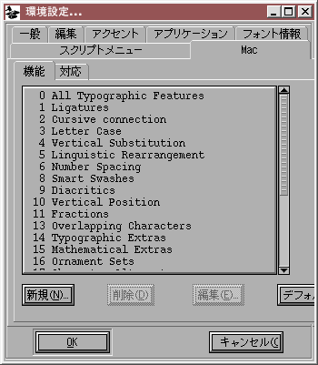
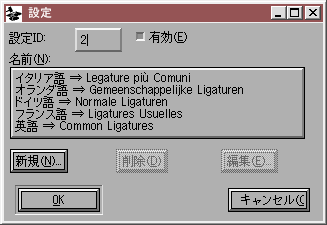
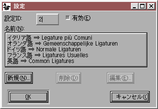
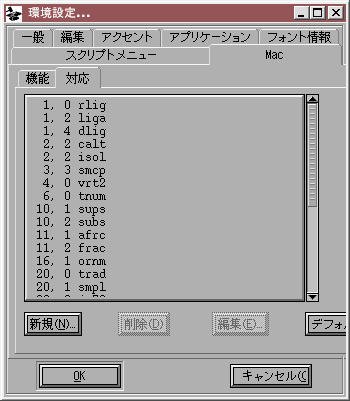

環境設定ダイアログ
(括弧内は環境設定(E)...メニューの項目名です)

-
AutoHint (
自動ヒント(A)) - ビットマップグリフを生成するときに自動ヒントを適用するかどうか (ビットマップの品質が向上します)
-
NewCharset (
新規文字セット(N)) - 新しいフォントを作成するときのデフォルトエンコーディング。通常はこれは ISO 8859-1 です。
-
NewEmSize (
新規EMサイズ(S)) - em 正方形に含まれる em ユニットの個数のデフォルト値を指定します。PostScript フォントではこの値は 1000 にするのが通例で、TrueType では 2 の冪乗とするのが普通です (しばしば使用されるのは 512, 1024 または 2048 です)。
-
NewFontsQuadratic (
2次曲線フォントを作成(Q)) - フォントに含まれるスプラインが 3 次と 2 次のどちらのフォーマットになるかを指定します。TrueType フォントは 2 次のスプラインを、いっぽう PostScript (および OpenType) フォントは 3 次のスプラインを使用します。FontForge がフォントを生成するとき、内部のフォーマットが何であれ、要求されたフォーマットで必要な形式に変換しますので、この設定が間違っていても問題ありませんが、正しく設定しておけば、アウトラインがどのように見えるかについてより明確な認識を得ることができるようになります。
-
LoadedFontsAsNew (
新規の次数で開く(L)) - FontForge がフォントを読み込むとき、一般的にはフォントで使用されているスプライン (TrueType では 2 次、PostScript では 3 次) を保持します。このフラグが設定されていると、読み込んだフォントのフォーマットはすべて、上記の NewFontsQuadratic の設定と同じになります。
-
ResourceFile (
リソースファイル(R)) - FontForge は X リソースをスクリーンのプロパティから読み込みます。しかし時にはこれでは十分でない場合があります。この環境設定項目では、リソースを読み込む元となるファイルを指定します (スクリーンの属性も読み込まれ、ファイルの指定よりも優先されます)。
-
HelpDir (
ヘルプディレクトリ(R)) - FontForge は、ユーザが [F1] キーを押すと、このディレクトリからヘルプファイルを検索します。
-
OtherSubrsFile (
OtherSubr ファイル) -
FreeTypeInFontView (
FreeTypeでフォント表示(O))- 通常は FontForge はフォントビューでのグリフ表示に FreeType ライブラリを使用します。これは FontForge の組込みラスタライザより遅いのですが、より高画質な画像を作成します。このプリファレンスアイテムにより、FreeType を使うか FontForge の組込みラスタライザを使うかを選択できます。
- 通常は FontForge はフォントビューでのグリフ表示に FreeType ライブラリを使用します。これは FontForge の組込みラスタライザより遅いのですが、より高画質な画像を作成します。このプリファレンスアイテムにより、FreeType を使うか FontForge の組込みラスタライザを使うかを選択できます。

-
AutoWidthSync (
幅を自動更新) - アクセントつきグリフの幅を、基底グリフの幅に同期するかどうか。同期する場合、A の幅を変更すると À の幅も自動的に変更されます (ただし、À が A への参照と grave への参照から構成されている場合)。
-
AutoLBearingSync (
LSBを自動更新) - アクセントつきグリフの左サイドベアリングを、基底グリフの左サイドベアリングに同期するか (A を左に動かすと À も左に移動することになります) どうか。
-
ItalicConstrained (
イタリック角への限定移動) - グリフビューで制限つき移動動作が水平・垂直方向だけでなくイタリックの傾き方向へも可能にするどうか
-
- ArrowMoveSize (
矢印キーの移動距離) - ArrowMoveSize (
- グリフビューで選択した点を矢印キーで移動するときの em ユニット単位での移動量。
-
SnapDistance (
スナップ距離) - グリフビュー内でのポインタモーションを行ったときに、興味あるオブジェクト (点・ベースライン・幅表示線など) にスナップする最大距離。ピクセル単位で指定します。
-
JoinSnap (
線のスナップ距離) -
編集(E)→線の接合(J)コマンドで接合される 2 本のスプラインの、端点同士の最大距離。これはグリフビューではピクセル単位で、それ以外のすべての場所では em ユニット単位で指定します。 -
CopyMetaData (
メタデータをコピー) -
フォントビューでの
編集(E)→コピー(C)のふるまいを制御します。通常は、コピーを行ってもグリフのメタデータ (名前、エンコーディングなど) はコピーされませんが、このフラグが設定されていると、それらもコピーされます。 -
UndoDepth (
アンドゥの上限) - グリフに保存することができる取り消し可能な操作の回数を制御します。いくつかの稀な状況では、この回数が 0 に設定されている場合でも元の状態が保存されます。
-
StopAtJoin (
接合後に一旦停止) - アウトラインビュー上で点をドラッグするとき、ある開いた輪郭の端点の上に他の開いた輪郭の端点が接合されます。これを Off にすると、点をさらに移動すると接合された点が移動し、On にすると、FontForge はマウスの移動を認識しながらも点を移動しません (マウスのボタンを放したときと同様にふるまいます)。これは、マウス操作で手が震えがちな人に役立ちます。
-
UpdateFlex (
flexヒントを更新) - どの点が flex ヒントの一部であるかを、グリフに変更が加わるごとに表示します。flex ヒントの中心にある点は緑の輪で囲んで示されます。flex ヒントが適用されるかどうかの判断基準は Adobe の T1_Spec.pdf の 72-73 ページに書かれています。これを設定すると、それらの条件が満たされなくなったことを目で確認することができます。
-
GlyphAutoGoto (
打鍵文字へ移動) -
グリフウィンドウでは、ユーザが通常文字を打鍵した時にどのように振舞うかをこの値が調節します。これが On になっていれば、通常文字が打鍵されるとグリフウィンドウはその文字に移動し、Off になっているとその文字は無視されます。

-
AccentOffsetPercent (
アクセント間隔の百分率) -
アクセントつきグリフを構築(B)コマンドで、アクセントと下にくる文字の間に置くべき空白の量を (em 正方形に対する百分率で) 指定します。 -
AccentCenterLowest (
アクセントの底を中心に) - アクセントを文字の上に配置するときに、アクセントの中心の下に文字を置くか、アクセントの下端の上に文字を置くかを指定します。
-
PreferSpacingAccents (
幅のあるアクセントを優先) -
アクセントつきグリフを組み立てるときに、幅のあるアクセント (Unicode 02C0〜02FF) を結合型アクセント (0300〜036F) より優先するかどうかを指定します。

-
PreferPotrace (
potrace を使用) - システムに potrace と autotrace 両方がインストールされている場合、FontForge が自動トレースにどちらを優先して使うかをこのオプションで指定することができます。
-
AutotraceArgs (
自動トレースの引数) - autotrace プログラムに渡したい任意のコマンドライン引数を指定することができます。入出力ファイルのフォーマットを変更したり、入出力ファイル名を指定するような引数を設定しないようにご注意ください。
-
AutotraceAsk (
トレースの引数) - これが設定されている場合、autotrace を起動するたびに引数を入力するように求められます。
-
MfArgs (
MFの引数) - これは、拡張子 .mf のファイルをビットマップに変換する mf (METAFONT) プログラムに渡されるコマンドライン引数です。
-
MfClearBg (
MFの背景をクリア) - .mf フォントの読み込みは複数ステップのプロセスです。最初にビットマップフォントを生成し、それを背景に貼りつけ、それから背景画像をトレースするべく autotrace が起動されます。これらの背景ビットマップは多くのメモリを消費する可能性があり、自動トレースが終わった後は残しておく必要性が薄いものです。この項目を On に設定しておくと、ビットマップを使用したあとフォントから取り除きます。
-
MfShowErr (
MFエラーを表示) -
mf プログラムは、正しく動作したときでも大量の冗長なメッセージを出力します。もし正常に動作しているのなら、それらの単語を見たくはないでしょう。そういうわけで、FontForge は通常は mf からのメッセージを表示しないようにしています。しかし何かうまくいかない事があるときは mf の出力を見る必要がありますので、これを設定するとそれを表示するようになっています。
-
CharCenterHighest (
文字の頂点を中心に) - アクセントを文字の上に配置するときに、文字の中心の上にアクセントを置くか、文字の上端の上にアクセントを置くかを指定します。

-
Foundry Name (
ファウンドリ名(F)) - BDF を出力するときに (X ウィンドウシステムで定められている方法によるフォント名の一部として) 使用されます。
-
TTF Foundry (
TTFファウンドリ) - 上と同様ですが、これは TTF ファイルの中で (OS/2 テーブルの achVendID フィールドとして) 使用されるもので、長さ 4 文字に限られています。
-
XUID-Base (
XUIDの基底) -
基底“XUID”です。ユーザの機関を一意に識別するものである必要があります。これが設定されていると、新規に作成されたすべてのフォントには、この文字列の後ろにランダムな数値を付け加えたものが XUID として設定されます (これは、空白で区切られた数値の列である必要があります)。PostScript フォントが出力されるたびに、この最後の数値は 1 ずつ増やされます。
私は Adobe に登録を行い、彼らは FontForge (実際には PfaEdit) に拡張ユニークID の基底として [1021] を割り当てました。FontForge を最初に起動したときには、あなた自身の拡張ユニーク ID を割り当てるために 2 個のランダムな数値を自動的に付け加えます。各フォントには、4 番目の数値が付け加えられます。
必要ならば、自分自身の基底 XUID を得るためにAdobe に直接登録することができます。
Adobe の UniqueID に関するコメントも参照してください。
-
AskBDFResolution (
BDF解像度を確認 - 通常、FontForge はフォントのピクセルサイズにもとづいて、どのスクリーン解像度で出力したいかを推測します (つまり、17 ピクセルフォントは通常 100dpi (12pt) であり、12pt は通常 75dpi です) が、もっと複雑な欲求を抱いている場合もあるでしょう。これを設定するとより細かい設定をすることができますが、そのためには別のダイアログを起動する必要があります。
-
PreferCJKEncoding (
CJKエンコーディングを優先) - これは、TrueType および OpenType フォントの読み込みを制御します。フォントに Unicode エンコーディングサブテーブルと CJK サブテーブルの両方が含まれているときに、FontForge がどちらを解読するかをこの項目を使って設定することができます。
-
HintForGen (
出力前に自動ヒント(H)) - フォントを出力する前にグリフに自動的にヒントづけするかどうか。
-
AlwaysGenApple (
常にApple TTFを出力) - 常に Apple スタイルの TTF フォントを出力したいならば (そして Windows 用フォントを決して出力しないならば) この項目を選択してください。
-
AlwaysGenOpenType (
常に OpenType を出力) - その逆に、常にフォントにOpenType テーブルを含めたい場合もあると思います。このフラグと AlwaysGenApple の両方をセットすることも許されますし、両方ともセットしないことも可能です。
-
PreserveTables (
保存するテーブル(P)) - 長さ 4 文字のテーブルタグを含む文字列をカンマで区切った物です。SFNT (ttf/otf) ファイルを読み込むときに、フォント内のテーブルのうち、これらのタグを含むものはすべて解釈されずに保存されます。(注意: FontForge がそのテーブルを理解可能だと判断した場合、保存せずに解析を優先して行います)。
-
NewFontNameList (
新規フォントの名前リスト) -
新しく作成されるすべてのフォントに付随することになる名前リストを指定します。このリストはそのフォント内で作成される任意のグリフに名前づけを行うのに用いられます。詳細については、名前リストに関するセクションを参照してください。

-
Clear Instructions on Big Changes (
大きな変更で命令を削除) -
TrueType 命令は点を番号で参照しています。ですから点の追加・削除やその他の点番号に関わる編集を行った場合、命令は元と異なる点集合に適用されます。
その結果、ときどき面白いことが起こりますが、ほとんどの場合は醜く間違ったものです。
これは現状に合わない PostScript ヒントとは非常に異なります。単に役立たないヒントが存在するというだけの話です (反対に、この場合は積極的に害をなします)。
FontForge は通常はこの現象を避けるためにすべての命令を削除します。しかしながら、変更をひとしきり行った後に命令を修復する準備があるならば、命令を残しておきたいとお考えになるでしょう。十分注意して使用してください!

ダイアログのこのセクション では、スクリプトメニューで表示される組み込みスクリプトを定義することができます。それぞれの項目には、それに付随するメニュー名とスクリプトファイルの 2 つがあります。メニュー名は、スクリプトメニュー内にこの項目が表示されるときの名前です。スクリプトファイルのほうは、呼び出されるファイルのファイル名です。[...] ボタンを押すとスクリプトファイルを見ることができます。スクリプトファイルの拡張子としては .pe を想定しています (が、私が決めたこの慣習が気に食わない場合はどのような拡張子でも好きに使うことができます)。
 Mac 機能ダイアログでは、Mac の機能と設定に対する (各言語の) デフォルト名称の組を設定することができます。ある機能/設定がフォントの‘morx’テーブルで使用されるときには常に、これらの名前は‘name’テーブルに格納されます (これにより例えば、フォントに一般的な合字がいくつか含まれている場合に、機能名「合字」と設定名「一般的な合字」を‘name’テーブルに含めることができます)。
このダイアログでは、ある機能においてどの設定がデフォルトであるかと、機能が同時には 1 個の設定しか使用できないかどうかを指定することもできます (これらの設定はどれか 1 つしか設定できません)。このデータのすべては、エレメント(L)→フォント情報(F)... で呼び出せる同様のダイアログでも設定でき、そちらの設定が優先されます。
既存の機能を編集するには (右にある) リスト内の機能名の上でダブルクリックしてください。左のダイアログが起動します。各機能には一意な数値を割り当てなければなりません。それが 2 つ同時に有効にできない機能が含まれているかそうではないかを指定する必要があります。機能の名前を様々な言語で提供し、その機能に対応する設定を指定する必要があるでしょう。
新しい名前を追加するには、名前リストの下にある [新規(N)...] ボタンを押せば言語と名前とを入力するように求められます。
新しい設定を追加するには、設定リストの下にある [新規(N)...] ボタンを押してください。設定ダイアログにはこの設定に対応する数値 (Apple は、その機能が他の機能と両立できないものでないならば、すべての設定は偶数でなければならないと宣言しています)、この設定がデフォルトで有効かどうかと、いくらでも好きな言語で設定可能な設定名のリストが含まれています。
 


Mac の対応づけダイアログでは、OTF の GSUB 機能タグと Apple の mort/morx 機能/設定コードを対応づけを定義することができます。
Apple の公開している機能・設定リスト は明らかに時代遅れです (現在のフォントで使用されているいくつかの機能はここに含まれていません)。
4 文字の OTF 機能タグを Mac の機能/設定の組合せに対応づけることができます。新しい対応づけを作成したい場合は、あなたの必要とする Mac の機能・設定が (上に掲げた) 機能リストにちゃんと含まれていなければなりません。そこにあれば、対応づけを追加することができます。
 Mac の機能 (これは必ず定義済みでなければなりません)・Mac の設定コードと 4 文字の OpenType タグを指定する必要があります。
Mac の機能 (これは必ず定義済みでなければなりません)・Mac の設定コードと 4 文字の OpenType タグを指定する必要があります。
設定を行う他の方法
環境設定ウィンドウではなく、以下の方法によって設定しなければならない項目が多数あります: